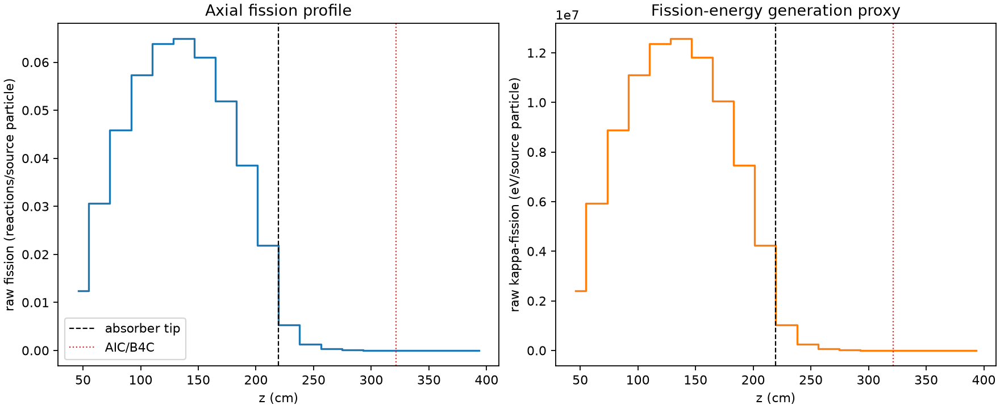
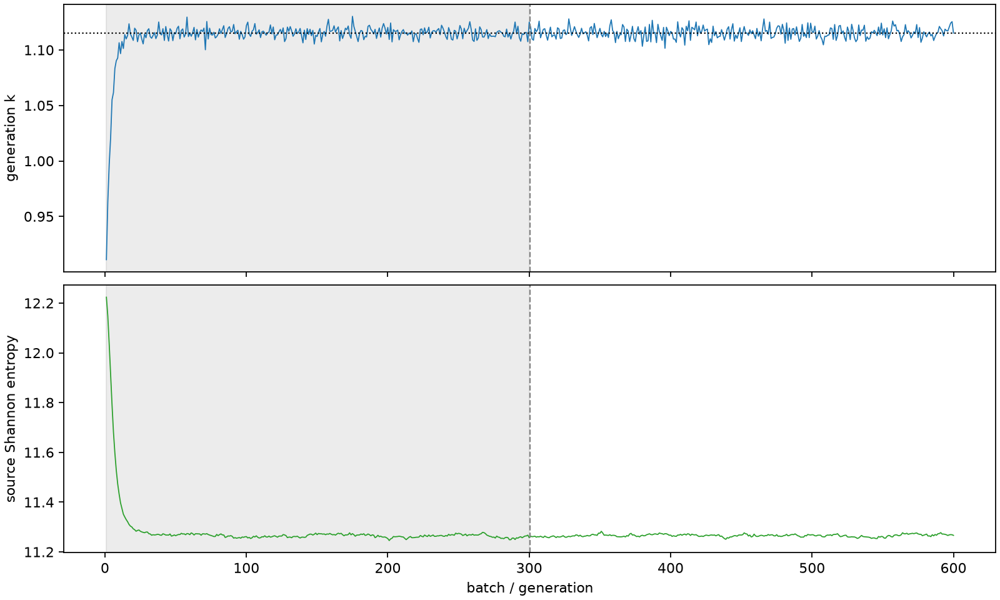

| field | value |
|---|---|
| experiment | V2-STAGE_32_OGRENCI_02-0008 |
| k | 1.115207704438209 |
| MC standard error | 0.0001867259620137375 |
| seconds | 1133.9011467010005 |
| acceptance | not_assessed |
| convergence | review_required |
Completed is output integrity only; physical and statistical review required. Zero tallies do not prove zero production or zero uncertainty.
| diagnostic | value |
|---|---|
| geometric fuel voxels | 5280 |
| zero fission tally voxels | 564 |
| low signal fuel voxels | 1630 |
| low signal fission share | 8.816473750250982e-05 |
| low signal kappa share | 8.819516151714384e-05 |
| important fission share | 0.9501504562399512 |
| previous filter included | 3650 |
| duration estimate s | 1562.5173488400023 |
| actual minus estimate s | -428.61620213900187 |
| fission relative MC error | statistics |
|---|---|
| all_geometric_fuel | {"voxels": 5280, "positive_mean_voxels": 4716, "zero_mean_voxels": 564, "undefined_relative_error_voxels": 564, "median": 0.01244204279685457, "p95": 0.8954586918223919, "maximum": 1.0000000000000002} |
| low_signal | {"voxels": 1630, "positive_mean_voxels": 1066, "zero_mean_voxels": 564, "undefined_relative_error_voxels": 564, "median": 0.5785468369071946, "p95": 1.0, "maximum": 1.0000000000000002} |
| important_95pct | {"voxels": 2333, "positive_mean_voxels": 2333, "zero_mean_voxels": 0, "undefined_relative_error_voxels": 0, "median": 0.0073335031396709735, "p95": 0.011035001558649107, "maximum": 0.014072632099825979} |
| outside_previous_filter | {"voxels": 1630, "positive_mean_voxels": 1066, "zero_mean_voxels": 564, "undefined_relative_error_voxels": 564, "median": 0.5785468369071946, "p95": 1.0, "maximum": 1.0000000000000002} |
| kappa_fission relative MC error | statistics |
|---|---|
| all_geometric_fuel | {"voxels": 5280, "positive_mean_voxels": 4716, "zero_mean_voxels": 564, "undefined_relative_error_voxels": 564, "median": 0.012427708185357565, "p95": 0.8958043560169171, "maximum": 1.0000000000000002} |
| low_signal | {"voxels": 1630, "positive_mean_voxels": 1066, "zero_mean_voxels": 564, "undefined_relative_error_voxels": 564, "median": 0.5774317190357605, "p95": 1.0, "maximum": 1.0000000000000002} |
| important_95pct | {"voxels": 2333, "positive_mean_voxels": 2333, "zero_mean_voxels": 0, "undefined_relative_error_voxels": 0, "median": 0.007324837873713671, "p95": 0.011020837098980604, "maximum": 0.014056241573991397} |
| outside_previous_filter | {"voxels": 1630, "positive_mean_voxels": 1066, "zero_mean_voxels": 564, "undefined_relative_error_voxels": 564, "median": 0.5774317190357605, "p95": 1.0, "maximum": 1.0000000000000002} |
| axial bin | fission share | kappa-fission share |
|---|---|---|
| 1 | 0.027174693152156332 | 0.027175803330200324 |
| 2 | 0.06730188071535619 | 0.06730136387810699 |
| 3 | 0.10067048035649014 | 0.10066977677087664 |
| 4 | 0.126012922413113 | 0.12601188948861397 |
| 5 | 0.14027838990581837 | 0.14027726790498507 |
| 6 | 0.14249427739147302 | 0.142493552455584 |
| 7 | 0.13399659325102786 | 0.13399559025413404 |
| 8 | 0.11409527101797166 | 0.11409451841997427 |
| 9 | 0.08477464931365249 | 0.0847742099774187 |
| 10 | 0.048011415447131535 | 0.04801150794154765 |
| 11 | 0.011541688159426727 | 0.011545413925329002 |
| 12 | 0.00276009223580543 | 0.0027611190564553268 |
| 13 | 0.0006662434267844274 | 0.0006665022774056772 |
| 14 | 0.000163763592277321 | 0.0001638206800710416 |
| 15 | 4.0967709661622364e-05 | 4.0985135750487865e-05 |
| 16 | 1.283465642319016e-05 | 1.2838532549569067e-05 |
| 17 | 2.75867914305217e-06 | 2.760702025940933e-06 |
| 18 | 9.042424036320467e-07 | 9.046859874824173e-07 |
| 19 | 1.743338838400075e-07 | 1.7458298378366658e-07 |
| 20 | 0.0 | 0.0 |
Histories include the inactive-to-active transition at batch 300. kappa-fission approximates fission energy production, not total heat deposition.

